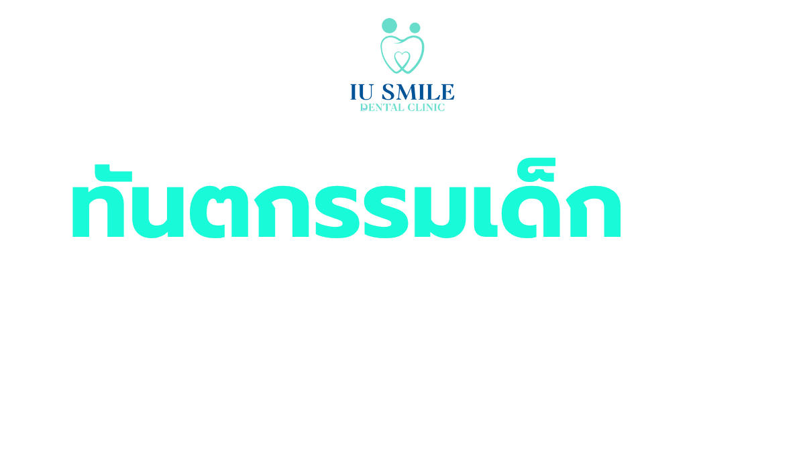
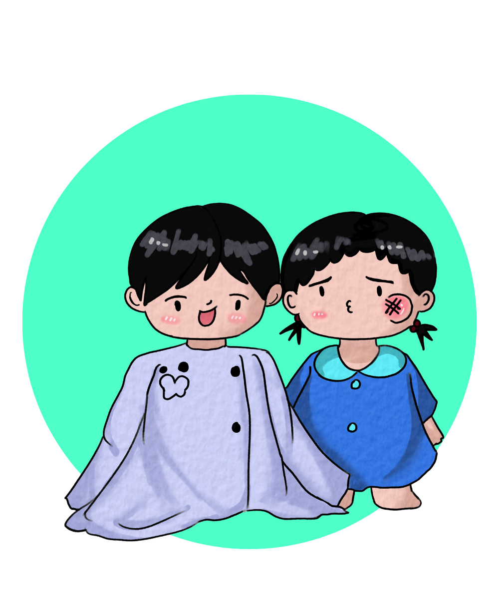
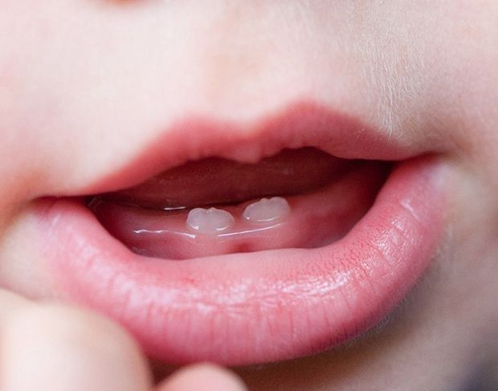
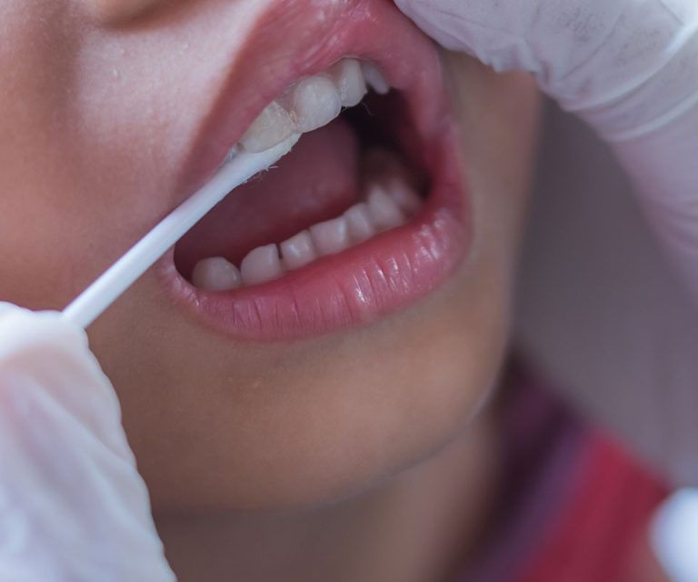
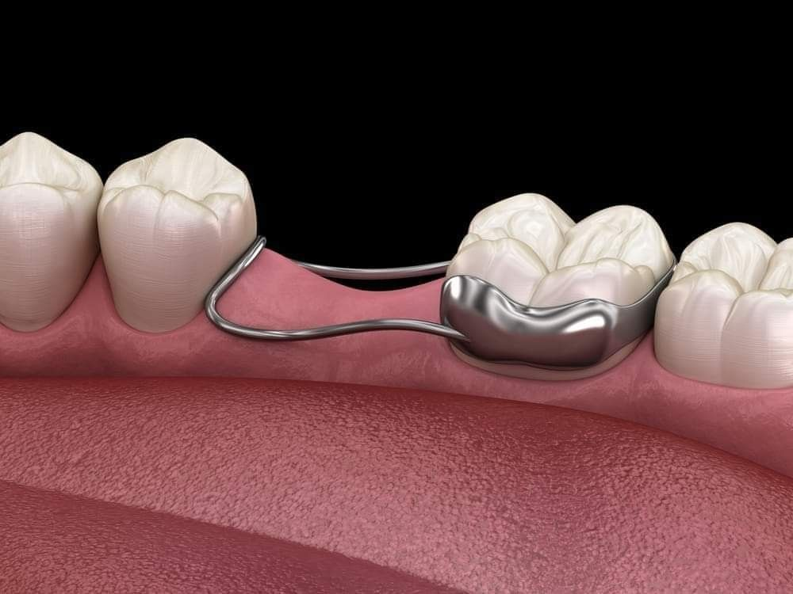

นัดหมายปรึกษา

ทันตแพทย์เด็กและสมาคมทันตแพทย์เด็กแนะนำตรงกันว่า ควรพาลูกไปพบทันตแพทย์ครั้งแรกเมื่อฟันน้ำนมซี่แรกขึ้น หรืออย่างช้าที่สุดไม่เกินอายุ 1 ขวบ (ฟันซี่แรกมักจะขึ้นช่วงอายุประมาณ 6 เดือน) การไปพบหมอฟันตั้งแต่ยังไม่มีปัญหาฟันผุ ไม่ใช่เรื่องที่เร็วเกินไป แต่เป็นการสร้างสิ่งที่เรียกว่า "บ้านทันตกรรม (Dental Home)" คือการให้เด็กมีหมอฟันประจำตัวที่คอยติดตามพัฒนาการช่องปาก ประเมินความเสี่ยง และให้คำแนะนำที่ถูกต้องแก่คุณพ่อคุณแม่

ทำอะไร: การตรวจเช็กสุขภาพช่องปากประจำปีการเคลือบฟลูออไรด์ เพื่อช่วยให้เคลือบฟันแข็งแรงและป้องกันฟันผุ, และ การเคลือบหลุมร่องฟัน (Sealants) บริเวณฟันกรามซี่ใน เพื่อปิดร่องฟันลึกไม่ให้เศษอาหารและแบคทีเรียเข้าไปสะสมจนเกิดฟันผุ

ทำอะไร: การอุดฟันน้ำนม (ด้วยวัสดุสีเหมือนฟัน) เพื่อรักษาฟันที่ผุให้กลับมาใช้งานได้ และในกรณีที่ฟันผุรุนแรงลึกถึงโพรงประสาท จะมีการทำรักษารากฟันน้ำนม หรือใส่ ครอบฟันเด็ก (Stainless Steel Crown) เพื่อคงสภาพฟันซี่นั้นไว้จนกว่าจะถึงเวลาผลัดใบตามธรรมชาติ

ทำอะไร: การตรวจประเมินความผิดปกติของการเรียงตัวของฟันและขากรรไกร ตั้งแต่วัยเด็ก (เช่น มีภาวะฟันล่างคร่อมฟันบน, นิสัยดูดนิ้ว, หรือฟันน้ำนมหลุดก่อนกำหนด) และอาจมีการใส่ เครื่องมือกันพื้นที่ (Space Maintainer) เพื่อป้องกันไม่ให้ฟันข้างเคียงล้มมาปิดช่องว่าง ส่งผลให้ฟันแท้ขึ้นได้ถูกต้องในอนาคต
เด็กทารก (ยังไม่มีฟัน): ใช้ผ้าสะอาดชุบน้ำอุ่นเช็ดทำความสะอาดเหงือก ลิ้น และกระพุ้งแก้มเบาๆ หลังมื้อนม
เริ่มใช้แปรงสีฟันขนอ่อนนุ่มสำหรับเด็กโดยเฉพาะ ร่วมกับยาสีฟันผสมฟลูออไรด์ (ปริมาณเท่าเมล็ดข้าวสารสำหรับเด็กต่ำกว่า 3 ขวบ หรือเท่าเมล็ดถั่วเขียวสำหรับเด็ก 3 ขวบขึ้นไป)
เด็กเล็กยังไม่มีทักษะและกลืมนิ้วมือที่แม่นยำพอที่จะแปรงฟันให้สะอาดทั่วถึงด้วยตัวเอง ผู้ปกครองควร "ช่วยแปรงซ้ำ" ให้จนถึงอายุประมาณ 7-8 ขวบ หรือจนกว่าเด็กจะเขียนหนังสือได้คล่องแคล่ว
ไม่ควรปล่อยให้เด็กหลับคาขวดนม (โดยเฉพาะนมหวาน นมเปรี้ยว หรือน้ำผลไม้) เพราะน้ำตาลจะแช่ค้างอยู่ในช่องปากเป็นเวลานาน ทำให้ฟันหน้าผุยุ่ยและลุกลามอย่างรวดเร็ว
จำกัดอาหารและเครื่องดื่มที่มีน้ำตาลสูง (เช่น ลูกอม เยลลี่ น้ำอัดลม) หากทานแล้วควรให้เด็กบ้วนปากหรือดื่มน้ำเปล่าตามทันที และส่งเสริมให้ทานผักผลไม้สดที่มีกากใย
อย่ารอให้ลูกปวดฟันแล้วค่อยมาหาหมอ การพามาตรวจเช็กทุกๆ 6 เดือนจะช่วยให้ทันตแพทย์พบรอยผุระยะเริ่มต้น เคลือบฟลูออไรด์ป้องกัน และแก้ไขปัญหาฟันได้ทันท่วงทีโดยไม่ต้องเจ็บตัวเยอะครับ